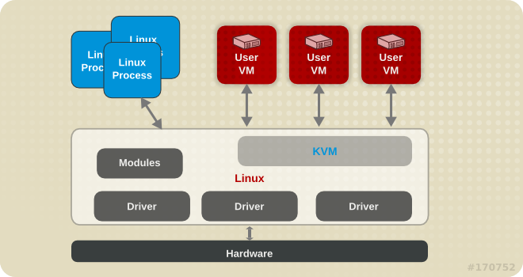
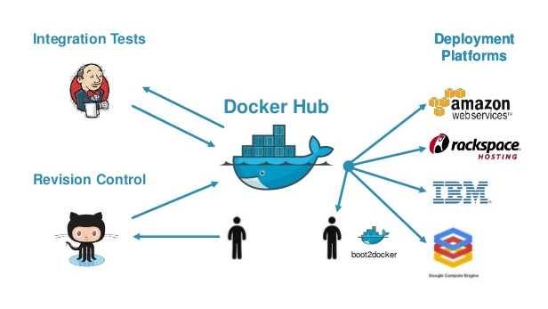
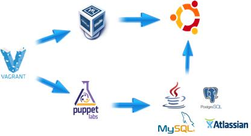

Missing Link in LINUX PLANET
Missing Link in LINUX PLANET
Virtualisation Architecture
Full Virtualization is virtualization in which the guest operating system is unaware that it is in a virtualized environment, and therefore hardware is virtualized by the host operating system so that the guest can issue commands to what it thinks is actual hardware, but really are just simulated hardware devices created by the host. Examples: Qemu, Dosbox. Pro: you can potentially emulate any architecture on any hardware. Con: it's the slowest way to do it.
A hypervisor, also called a virtual machine manager, is a program that allows multiple operating systems to share a single hardware processor.
VirtualBox is a software application that runs on top of your OS. It can use capabilities of your OS and hardware to accelerate the virtualization. The VirtualBox software must remain running for the virtualized systems to remain operational.
Xen is a subclass of operating systems called a hypervisor, it is an OS which only provides virtualization. It offloads management capabilities to a separate management OS which it calls the "dom0", usually Linux. The management OS provides drivers for the physical hardware.
VMWare has several products. VMWare Workstation works like VirtualBox, while VMWare ESX is a hypervisor similar to Xen. A major difference to Xen is that ESX provides its own hardware drivers and as a result has limited hardware support.
KVM is a project which adds a hypervisor into the Linux kernel. Because KVM uses a hypervisor, it does not need to remain running in the same fashion as VirtualBox. While KVM is a hypervisor such as Xen and ESX, it is simultaneously a Linux kernel & OS of its own accord.
Docker currently uses LinuX Containers (LXC), which run in the same operating system as its host. This allows it to share a lot of the host operating system resources. It also uses AuFS for the file system. It also manages the networking for you as well.

A full virtualized system usually takes minutes to start, LXC containers take seconds, and sometimes even less than a second.
There are pros and cons for each type of virtualized system. If you want full isolation with guaranteed resources, a full VM is the way to go. If you just want to isolate processes from each other and want to run a ton of them on a reasonably sized host, then LXC might be the way to go.
VMs are about running several full guest Operating Systems (Linux, Windows, BSD¿) on shared hardware resources. Those OS can be different in each VM and can be different from the host OS. Each OS (kernel) thinks that it¿s running on its own on regular hardware, given generic or hypervisor-specific drivers.
Containers are about resources isolation: processes, file-systems, network interfaces and other kernel resources (shared memory, mutexes, semaphores¿) within a single running operating system, given some usage limitation (CPU, memory, iops). Containers are often described as chroot on steroids. FreeBSD jails or Solaris zones/containers address the same goal.
So if containers are nothing but isolation, why can they be compared to VMs? In Linux world, starting a container with a full-OS-like process tree (init/systemd/upstart, ssh) within a dedicated filesystem, gives you access to a logical isolated system which really behaves like a VM, from a user perspective, you can log by ssh on it on a dedicated IP address, do sudo, ps, top, yum/apt-get install, kill, service apache2 restart. OpenStack, libvirt, vagrant, have now plugged LXC as yet-another-way of providing VMs, even if this term doesn¿t really fit.
Vagrant is not just about creating VMs, it is about automating the work of setting up development environments for your projects. Concretely, without Vagrant, every time you need a VM to work/test, you have to install the OS from scratch and install manually every needed tools; or you can clone the existed one. But both are manual jobs and not customizable. With Vagrant and Puppet/Chef/Ansible, you will have a new VM ready for work in no time, with every tools you need, even your source code project will be ready & wait for your development. It is automatic and configurable.
A bare metal environment is a computer system or network in which a virtual machine is installed directly on hardware rather than within the host operating system (OS)
OpenVZ (Open Virtuozzo) is an operating system-level virtualization technology based on the Linux kernel and operating system. OpenVZ allows a physical server to run multiple isolated operating system instances, called containers, virtual private servers (VPSs), or virtual environments (VEs).

Copyright © 2013 - 2015 Linux Connector . All rights reserved.